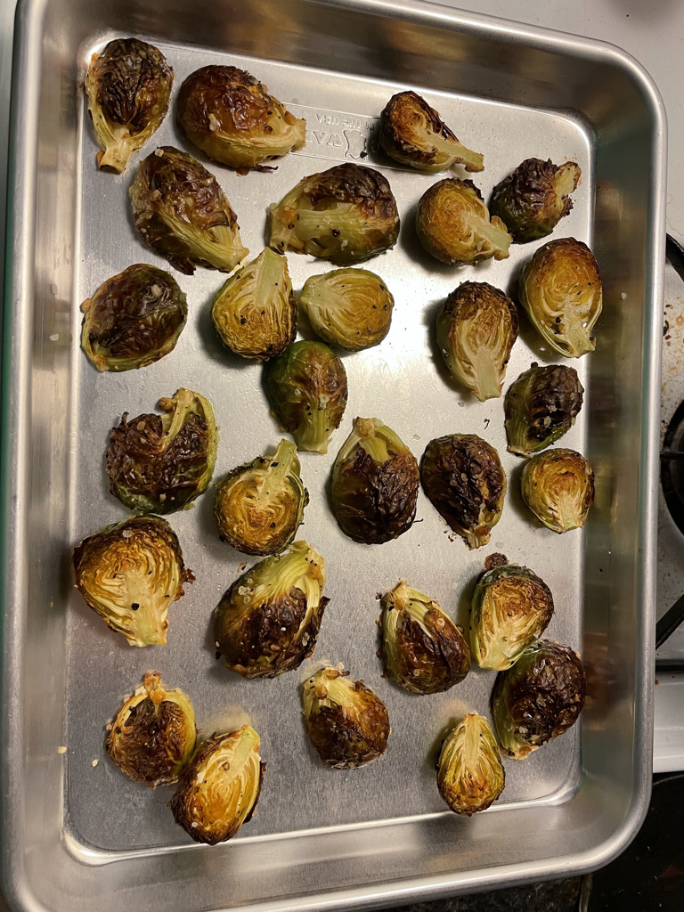

Roasted Brussel Sprouts

Description
A great veggie side.
Ingredients
- 1.5 lbs Brussel Sprouts
- 3 tbsp good olive oil
- 3/4 tsp kosher salt
- 1/2 tsp FGBP
Steps
- Preheat oven to 400º
- Cut off the brown ends of the Brussels sprouts and pull off any yellow outer leaves.
- Soak in salt water for 10 minutes
- Mix them in a bowl with the olive oil, salt and pepper.
- >Pour them on a sheet pan and roast for 35 to 40 minutes, until crisp on the outside and tender on the inside. Shake the pan from time to time to brown the sprouts evenly.
- >Sprinkle with more kosher salt ( I like these salty like French fries), and serve immediately.